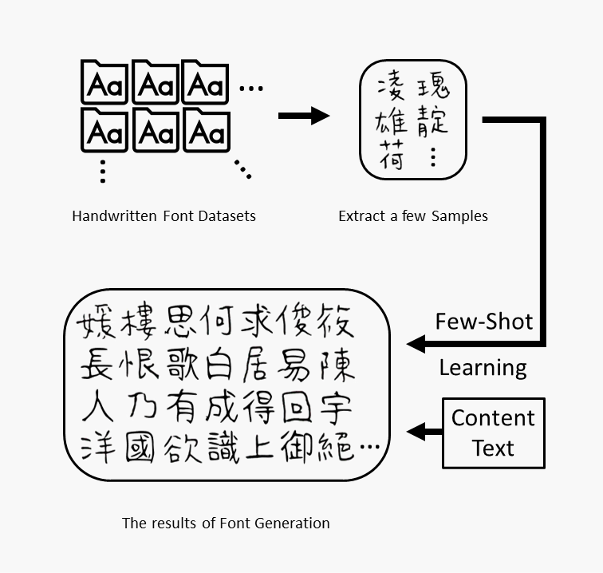

摘要 
本研究採用基於機器學習的編碼-解碼模型(Encoder-Decoder)架構，將輸入影像轉換為潛在表示並解碼為生成的手寫字影像。這種架構能從現有手寫字影像中學習風格特徵，並生成相似風格的新手寫字影像。一旦訓練好生成模型，就能由少數樣本自動生成整套具有個人風格的手寫字體。雖然手寫字體能更好地表達個人風格並彌補資訊社會的冷漠感，但生成手寫字體需要大量人力和時間。前期需人工書寫大量文字，後期也要進行複雜的程式處理，才能生成一套完整的手寫字體。為了解決手寫字生成的繁瑣問題，本研究使用全新設計稿紙，收集了六十八人的大五碼(Big5)手寫字樣本，構建了包含 924,732 字的六十八人 Big5 手寫字體資料集作為本研究的基礎資料。接著通過生成模型進行少樣本學習，從少數字學習手寫風格並自動生成大量文字的手寫字。本研究節省了人力和時間，同時提高了手寫字體生成的效率。
